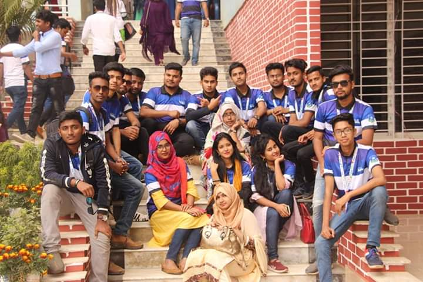

My name is Nurunnahar Nody. I am from daffodil International University. I am a CSE student. Travelling is my passion. i want to travel this beautiful world. Here I share my some travel pictures and information I collect after travelling those places. you can check my site to know about travelling and other things.
Diu the name of love. The name of affection,the name of care. Our dream,our pride.
Daffodil International University (DIU; Bengali: ড্যাফোডিল আন্তর্জাতিক বিশ্ববিদ্যালয়) is a private university located in Dhaka, Bangladesh. The original campus is located at Dhanmondi and the permanent campus is located in Daffodil Smart City, Khagan, Ashulia, Savar which is in Dhaka district. It was established on 24 January 2002 under the Private University Act of 1992 which was replaced by Private University Act 2010. According to QS University Rankings: Asia 2021, DIU is a top-ranked private university among all the universities in Bangladesh. DIU placed 1st among universities ranked from Bangladesh in Times Higher Education Impact Rankings 2021. DIU is the first university in Bangladesh to have signed the UN's Commitment to Sustainable Practices of Higher Education Institutions.According to the SCOPUS indexed research publications in 2019, Daffodil International University has been positioned 4th among all universities and 1st among all private universities in Bangladesh.
I remembered the day when i was travelling shajek for the first time. It was 2018. And obviously it was sudden decission to go there. Me and my some senior mates. We stayed shajek for 3 days. and it's really a great fun for us. If you have mo work for this vacation my sugession was please go there to saw the natural beauty. Here some of my picture I clicked.
I remembered the day when i was travelling Sylet for the first time. It was 2020. And obviously it was sudden decission to go there. Me and my some class mates. We stayed sylhet for 1 day. and it's really a great fun for us. If you have mo work for this vacation my sugession was please go there to saw the natural beauty. There you can see hills and natural view.Here some of my picture I clicked.
I remembered the day when i was travelling Cox's bazar for the first time. It was 2020. The longest sea beach in the world. And obviously it was sudden decission to go there. I am go there as study tour. We stayed cox bazar for 3 day. and it's really a great fun for us. If you have mo work for this vacation my sugession was please go there to saw the natural beauty and smelled the ocean.Here some of my picture I clicked.